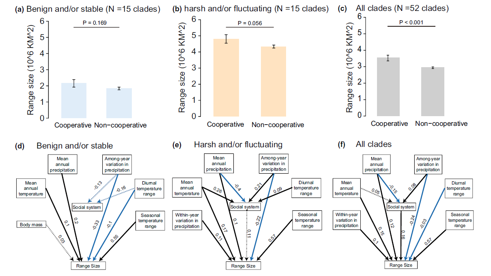

The Ecological Consequences of Sociality in Global Avian Clades
Based on the latest research on starlings and hornbills (Lin et al. 2019), different types of cooperation are formed by different ecological causes and cooperative benefits, which will affect the ecological consequences (the geographical distribution of species).
We use phylogenetic analyses to construct causal relationships between life-history traits, climate factors, and geographical distribution on a global scale. Also, we provide robust evidence that species range size is the key concept to distinguish two cooperative benefits and provide empirical evidence for future studies in different taxa.
Published in Ecology Letters →